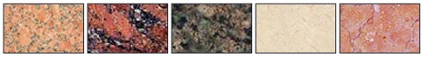

Натуральный камень
Натуральный камень - продажа натурального камня в Киеве, с доставкой по Украине - купить натуральный камень - отделка натуральным камнем - природный камень Киев
Этот великолепный материал, является идеальным для строительных и декоративно-отделочных работ. Его богатая фактура, устойчивость к внешним воздействиям и экологичность сделали его столь популярным.
Натуральный камень одновременно чудесным образом выполняет функциональную и эстетическую нагрузку. Также важно отметить, что натуральный камень имеет такие качества, как прочность, морозостойкость и влагоустойчивость. При хорошем уходе изделия из натурального камня не имеют срока службы. Это значит, что независимо от сферы его использования в интерьере квартиры, дома или участка он непременно подчеркнет высокий статус своего хозяина. А естественная красота натурального камня может быть подчеркнута при помощи художественной резьбы.
В основном в производстве строительных и архитектурных элементов применяются мрамор и гранит .
Продажа натурального камня и изделий из натурального камня в Киеве с доставкой по территории Украины
Исскуственный камень
Исскуственный камень«Стоун дизайн» предлагает широкий выборискусственного камня – по форме, цвету и текстуре.
Искусственный камень является более доступным (более низким по себестоимости), чем натуральный, и ,при этом, ему так же, как и натуральному присущие легкость, долговечность и износостойкость. Искусственный камень не боится коррозии, влажности или высоких температур. Он выполнен из экологических материалов.
Искусственный облицовочный камень обладает интересным свойством имитации внешнего вида и текстур множества природных материалов.
Декоративный камень в любое помещение внесет частицу особого шарма, благородства и уникальность.
Используется в строительстве, легко обрабатывается. Является прекрасным средством как для внутренней так и для внешней отделки.
Полудрагоценный камень
Полудрагоценные камни известны своим уникальным красивым внешним видом, который они принимают после полирования и шлифования. Их используют для производства множества ювелирных изделий, а также они служат декоративным и отделочным материалом в интерьерах помещений.
Полудрагоценные камни способны создавать шикарные каменные поверхности, гармоничным образом сочетая в себе природную цветовую гамму и уникальные узоры.
Полудрагоценные камни обладают устойчивостью к нагреванию , разного роду пятнам и царапинам.
Наши партнеры
Витраж лайфИзготовление всех видов витражей - витражи тиффани, фацетированый витраж, пленочный витраж.
Компания ЕВДИСКомпания «ЭВДИС» - это системный интегратор решений аудиовизуального комплекса, комплексной автоматизации, систем безопасности для объектов различного назначения.
Камины и порталы
Предлагаем камины и каминные порталы из натурального камня. Изысканные с резьбой по камню. Декоративные. Установка каминов.
Лестницы, ступени, холлы
Лестницы из гранита или мрамора придадут Вашему дому изысканный, респектабельный, стильный вид и станут показателем отличного вкуса. Лестницы из мрамора и гранита можно сочетать с деревом и коваными изделиями, что добавит интерьеру дополнительный шарм.
Подоконники
Подоконники из гранита устанавливают как внутри, так и снаружи помещения. Они имеют высокую устойчивость к механическим, химическим, температурным воздействиям. Подоконники и столешницы на кухне рекомендуют подбирать в схожей цветовой гамме.
Столешницы, ванны и раковины
Кухонная столешница необходима для украшения в интерьере, и в тоже время выполняет функцию рабочей поверхности или столика. Поверхность столешницы чаще всего подвергается большим эксплуатационным испытаниям.
Полы и стены
Мраморные полы следует использовать в жилом доме. Этот материал очень теплый и эстетически привлекательный. Натуральный мрамор быстрее прогревается и лучше отдает тепло, для полов с подогревом это самый лучший вариант. Мрамор также прекрасно подходит для ванных комнат, так как влага легко впитывается в него ,а затем испаряется. При механических повреждениях, царапины с мраморной поверхности можно легко удалить повторным ее полированием, на ее стыках со временем не появляются щели, также мрамор не скрипит.